Merry X-mas
● ● ●
크리스마스 도자기 목도리
통통 오브제
Christmas Ceramic Scarf Chubby Object
도자기 · 빨간 목도리 · 크리스마스 소품
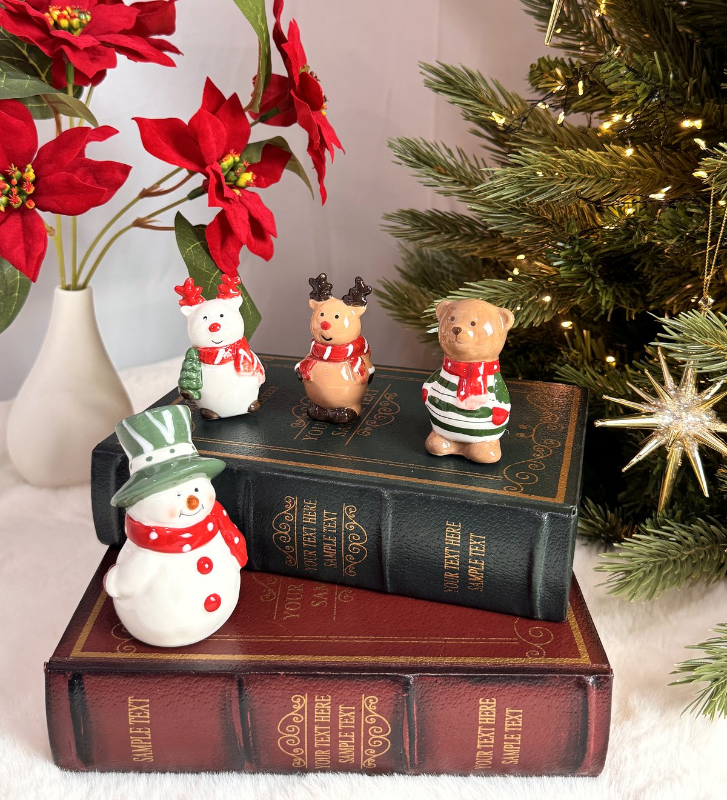
Little Friends
통통한 몸에 빨간 목도리를 두른
작은 크리스마스 친구들
반질반질 윤기가 나는 도자기로 만든 목도리 오브제예요.
루돌프 2종, 모자 쓴 눈사람, 곰돌이까지
모두 목도리를 두르고 있어요. 마음에 드는 친구를 골라 보세요.
Option
옵션 선택
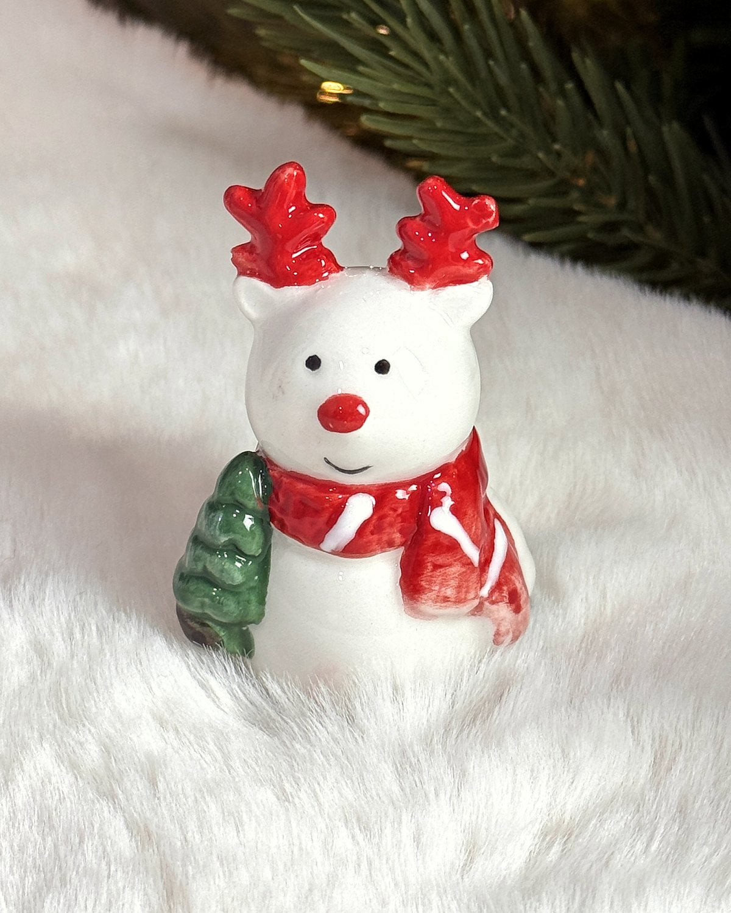
1. 루돌프(화이트)
가로 3 x 높이 6.5cm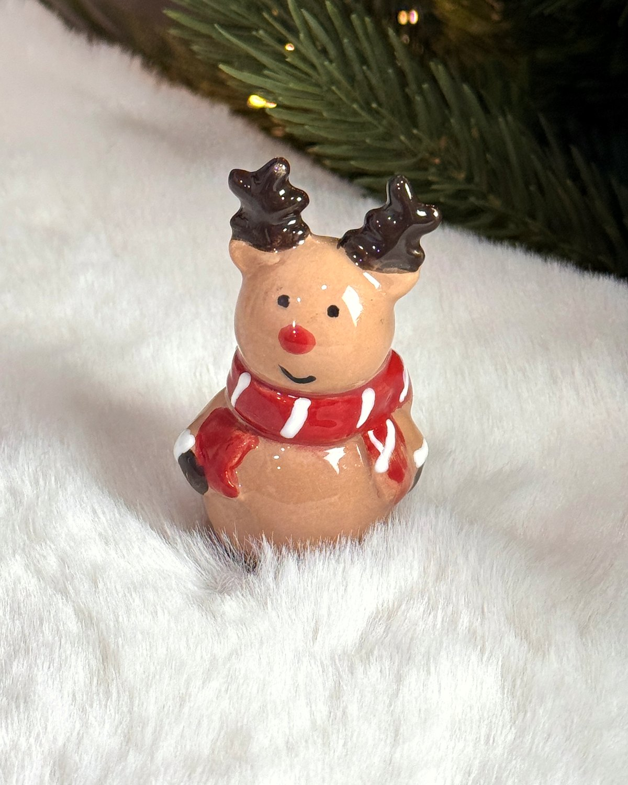
2. 루돌프(브라운)
가로 3 x 높이 6.5cm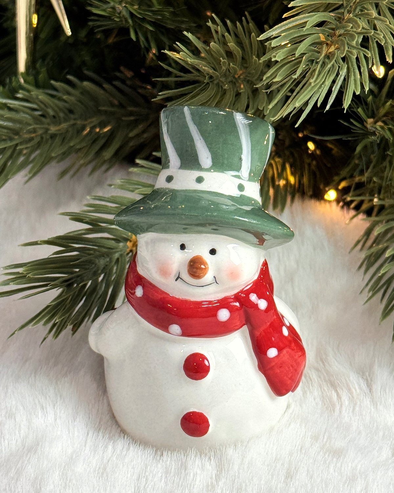
3. 모자 쓴 눈사람
지름 4.5 x 높이 8.5cm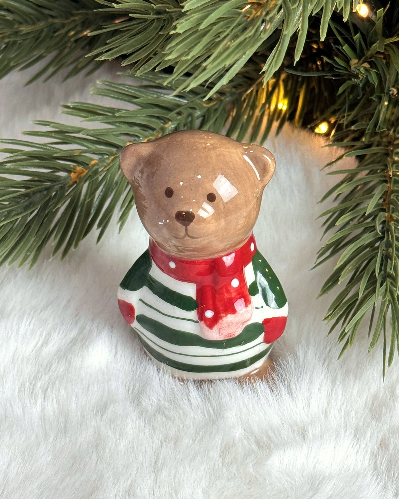
4. 곰돌이(브라운)
가로 3 x 높이 6.5cm
1. 루돌프(화이트)
Rudolph White
가로 3 x 높이 6.5cm하얀 몸에 빨간 뿔과 빨간 코를 가진 루돌프예요. 빨강·흰 줄무늬 목도리를 두르고 초록 트리를 안고 있어요.
2. 루돌프(브라운)
Rudolph Brown
가로 3 x 높이 6.5cm따뜻한 갈색 몸에 짙은 갈색 뿔, 빨간 코를 가진 루돌프예요. 빨강·흰 줄무늬 목도리를 두르고 있어요.
3. 모자 쓴 눈사람
Snowman with Hat
지름 4.5 x 높이 8.5cm초록 줄무늬 모자를 쓴 동글동글한 눈사람이에요. 빨간 물방울 목도리와 빨간 단추가 포인트예요.
4. 곰돌이(브라운)
Teddy Bear
가로 3 x 높이 6.5cm갈색 곰돌이가 초록·흰 줄무늬 옷에 빨간 목도리를 두르고 있어요.
Check Point
이 오브제의 매력 포인트 3가지
Point 1
반질반질
윤기 나는 도자기
표면에 은은한 광택이 돌아요. 불빛 아래에서 더 예뻐 보여요.
Point 2
모자와 목도리까지
또렷한 색감
초록 줄무늬 모자와 빨간 물방울 목도리의 색이 또렷하게 표현되어 있어요.
Point 3
손안에 쏙
들어오는 크기
눈사람이 높이 8.5cm로 한 손에 올려도 여유로운 작은 크기예요.
사이즈
1. 루돌프(화이트) 가로 3 x 높이 6.5cm2. 루돌프(브라운) 가로 3 x 높이 6.5cm3. 모자 쓴 눈사람 지름 4.5 x 높이 8.5cm4. 곰돌이(브라운) 가로 3 x 높이 6.5cm
Styling
트리 아래, 포인세티아 옆에 놓아 보세요
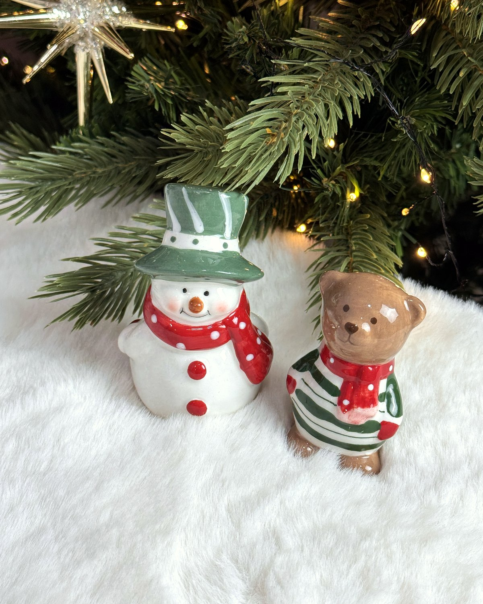
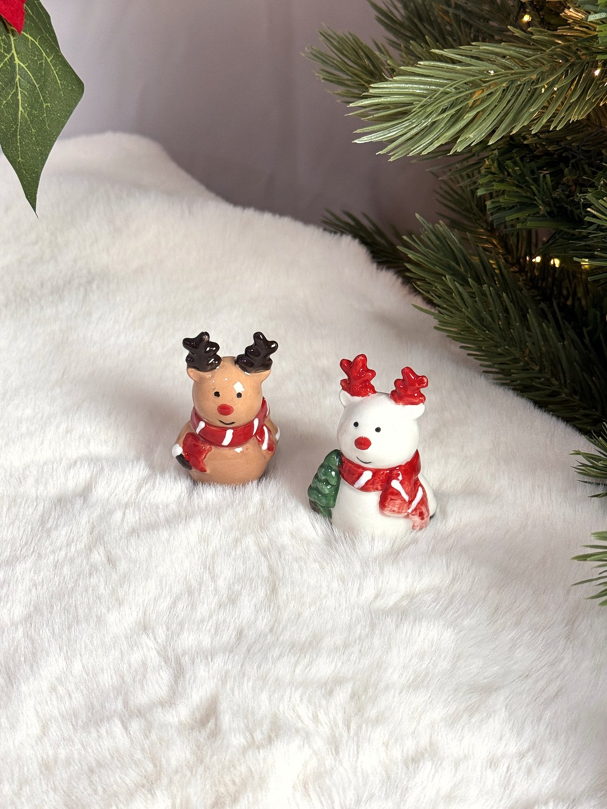
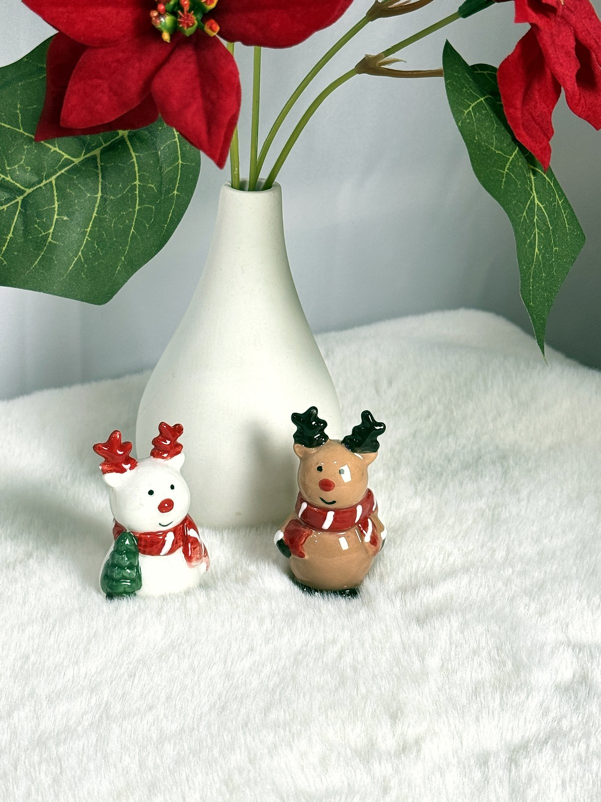
Gallery
책 위에서, 러그 위에서 자세히
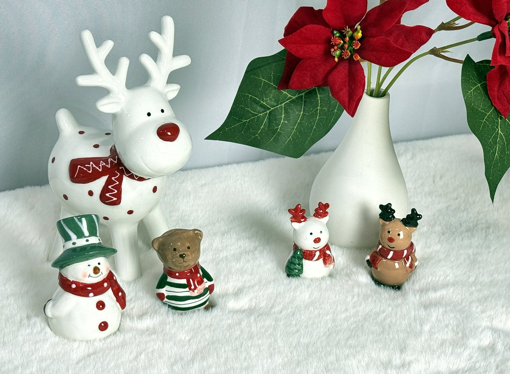
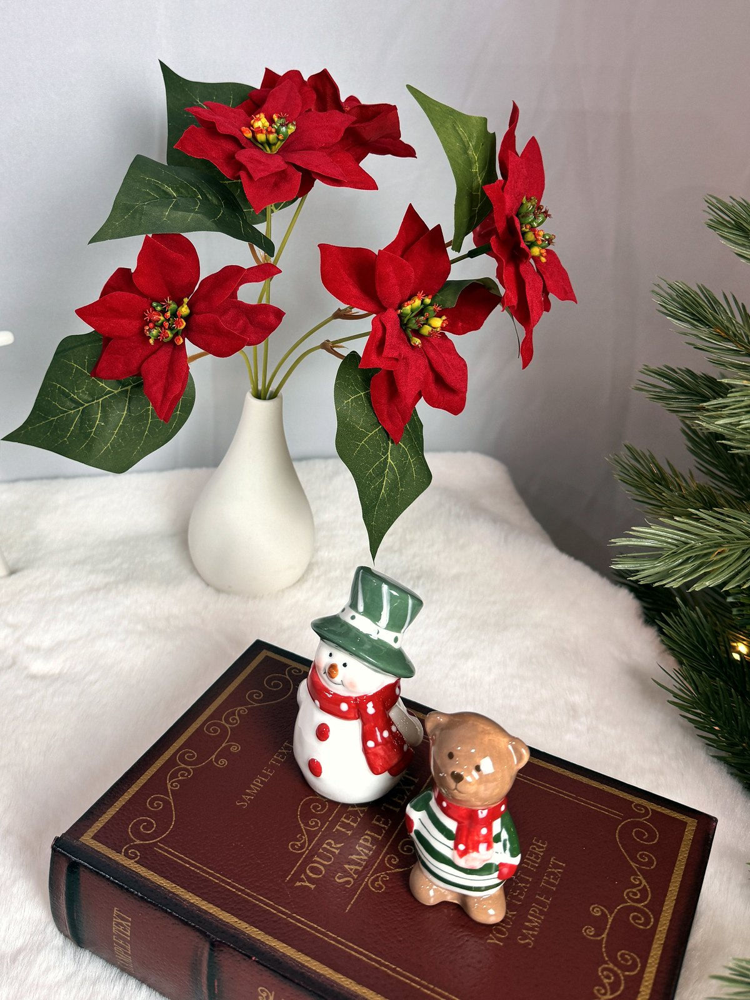
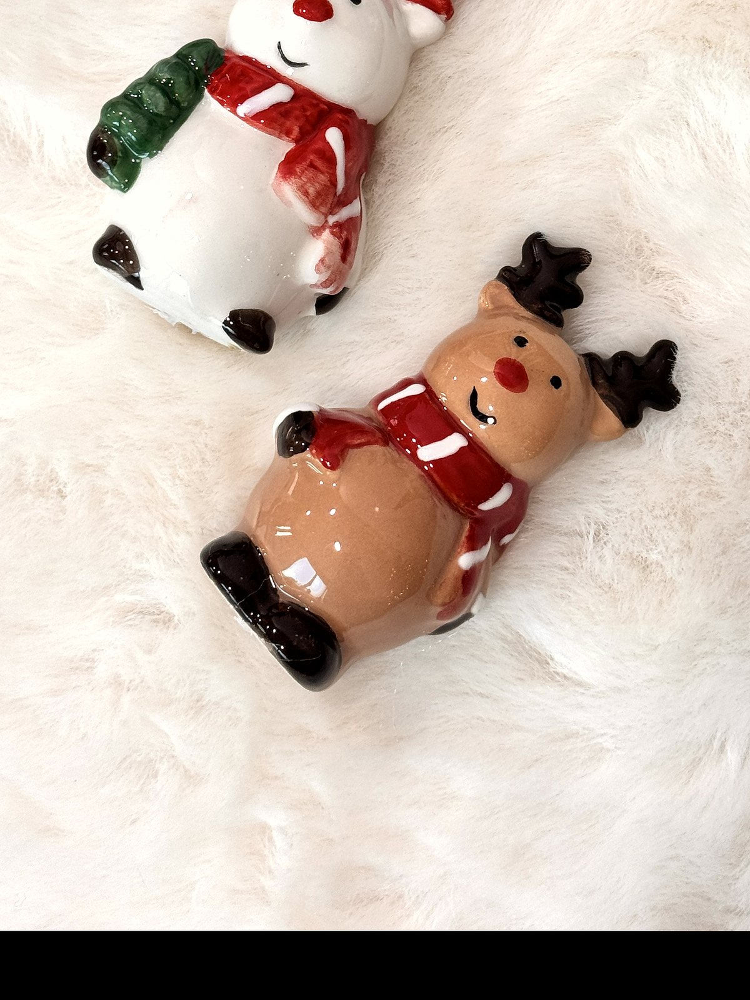
Product Info
상품정보
| 상품명 | 크리스마스 도자기 목도리 통통 오브제 |
|---|
| 재질 | 도자기 |
|---|
| 옵션 | 1. 루돌프(화이트)2. 루돌프(브라운)3. 모자 쓴 눈사람4. 곰돌이(브라운) |
|---|
| 사이즈 | 1. 루돌프(화이트) 가로 3 x 높이 6.5cm2. 루돌프(브라운) 가로 3 x 높이 6.5cm3. 모자 쓴 눈사람 지름 4.5 x 높이 8.5cm4. 곰돌이(브라운) 가로 3 x 높이 6.5cm |
|---|
| 용도 | 크리스마스 장식 · 소품 연출용 오브제 |
|---|